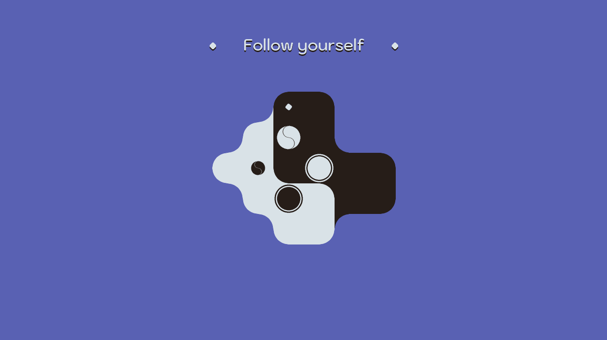
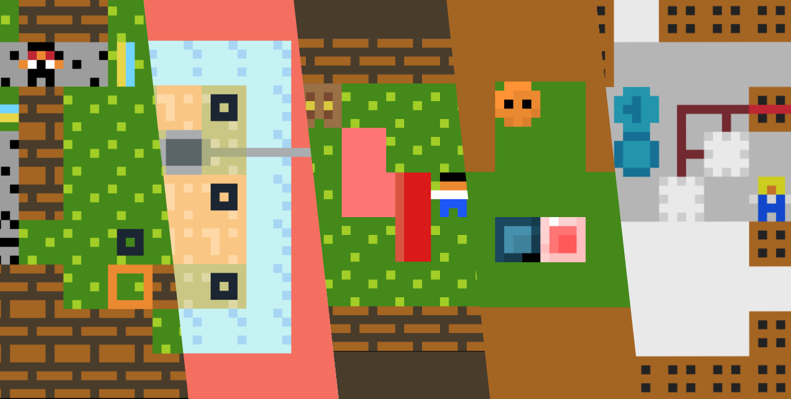
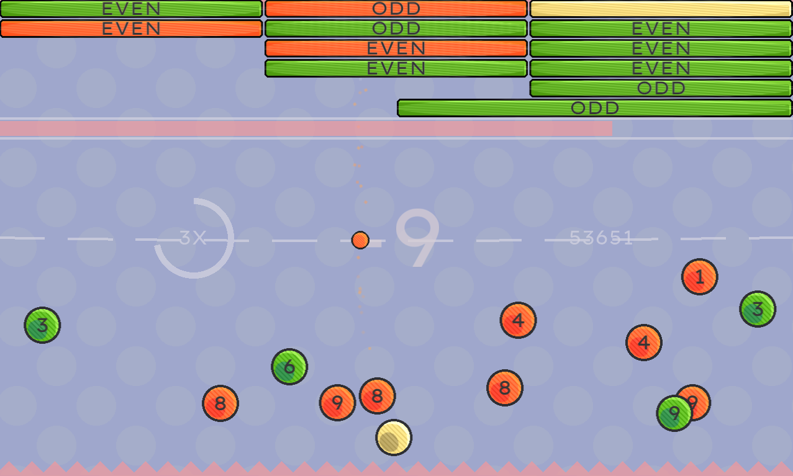
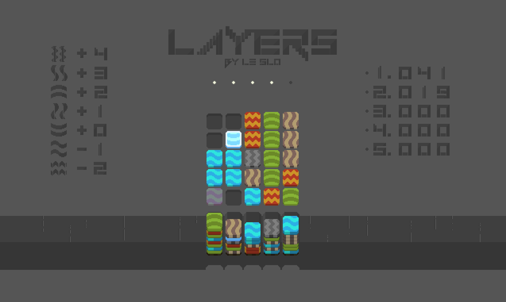
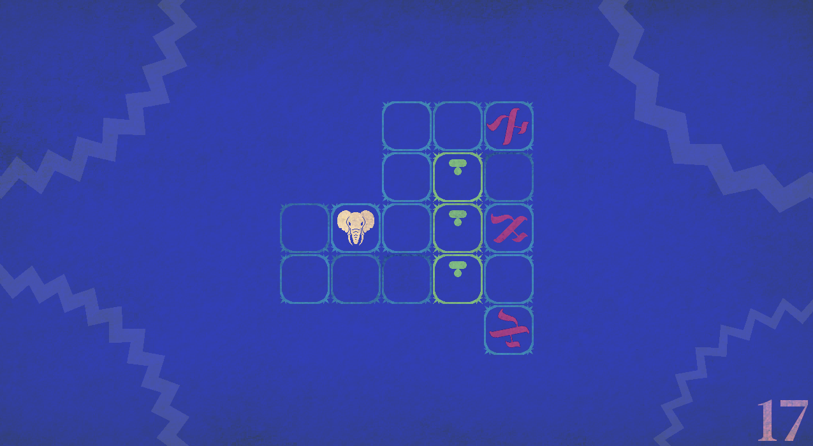

Inner Tao was released the 12th of April on Steam and itch, I spent a month and a half polishing and updating the game (Options Menu, translation to spanish, an ending, a whole revision to the game’s level design, gamepad controls, steam integration…) plus dealing with some basic marketing stuff (press kit, reaching to different media for reviews, handling key giveaways to streamers…) While far from being a commercial success this has been a great experience for future releases.

After planning some possible new mechanics for A loop is a loop, I started a project from scratch and programmed the base for those mechanics. It worked but it wasn't beatiful. I decided to put this on hold until I had more experience with puzzle-platformers and developed my knowledge of Game Maker 2 new coding update or found someone to collaborate with in this project.
I haven't yet explored Godot or Unity yet. I focused on the last year Game Maker's 2.3 update, which added a lot of new interesting features as language update (structs, functions...), sequences, animation curves, debugger...
I started my journey with Photopea (a web based photoshop) and web development. To host a web I also had to learn some git and source control, that will definitely be handy for big projects. This web was made as a personal test on the skills I learned during the summer.
I started my journey with Photopea (a web based photoshop) and web development. To host a web I also had to learn some git and source control, that will definitely be handy for big projects. This web was made as a personal test on the skills I learned during the summer.
I almost immediately discarded the idea of finishing "Sunsets", this was a content driven game with very few puzzle interest, and that was started with a prior version of the engine I use, translating into more work. However, I really liked the idea of the collection 10mg, so this summer I got interested in organizing something similar but for Thinky games (a collection of 8-10 new short accessible puzzle games).The project is meant to last for around 5 months, and will start mid september, at the moment I’m still interviewing and trying to find a varied, diverse and auto sufficient team to ensure the project will succeed.

So far only one telephone-puzzlescript has been organized (still in development). I also joined “Project 5”, to create a collaborative puzzlescript game with a more common development cycle, where we end up using one of the prototypes I made, however the organization of that project wasn’t solid enough and dissolved after a month. Apart from that, I used puzzlescript for a couple of non-released prototypes.
I ended up deciding soon that puzzlescript was not expanding my skillset, that it was a tool I used because of the little time I had past year, so I actively stop working with it for the moment being.
I ended up deciding soon that puzzlescript was not expanding my skillset, that it was a tool I used because of the little time I had past year, so I actively stop working with it for the moment being.
So far I already participated in 4 gamejams (1 Ludum Dare, 1 Chain Letter Jam, 1 GMTK and 1 Thinky Puzzle Jam). In these games I allowed me to experiment following some of the design challenges from the next bullet point.

Stellarea: I made this text-less game trying to explore the non-grid-based puzzle space, it was inpired by Venn Diagrams.

Add to odd: Arcade Math game, first approach to gamifying maths and making it fun.

Layers: Puzzle-Strategy score attack game. Sort of discoverable, there are a lot of rules to find, learn, and master. I wrote a post-mortem of the game in a short blog.

Alephant: Sokoban-like, tried to innovate in the objective of this subgenre. Found some interesting mechanics, and right now I'm working on a major update.